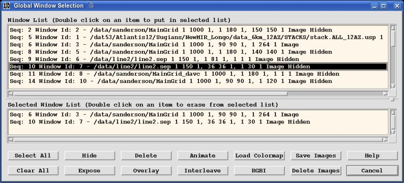

Select the "Window→Global" menu button to pop-up the "Global Selection
Window". Various types of functions can be done on multiple Display Windows.
The top area shows all the current available Display Windows. Double click
on any of them to add them to the selected list below. Double click on the lower
Selected List to remove any. You can also click on the "Select All" button
to select all Display Windows from the top list to the bottom Selected List or
"Clear All" button to clear the entire Selected List.

Once you have the desired Display Window(s) selected you can perform any of the
following tasks:
- "Hide" the selected Display Windows. Any of these can be redisplayed
by "exposing" them either through this "Global Selection Window" or through
the "Window→Expose Window" menu button. This can also be done on
any specific Display Window by clicking on the "Window→Hide Window"
menu button.
- "Expose" the selected Display Windows. If they were Hidden
previously, then will be exposed. This can also be done on any single
window by popping up the Expose Window by clicking on the
"Window→Expose Window" menu button and then selecting a Display
Window to expose.
- "Delete" the selected Display Windows. Once deleted they cannot
be recovered other than to reload them again.
- "Animate" the multiple selected Display Windows. This allows you
to rapidly animate through multiple Display Windows which helps to make
subtle comparisons of the various data images (See
Animation).
- "Overlay" the one or more selected Wiggle Displays on top of a
Display Windows. The order of the selection does not matter. It will only
allow one non-Wiggle Display which will be used as the background for all
the selected Wiggle images to be displayed. This is useful for displaying
wiggles overlay-ed onto the corresponding velocity image (See
Overlay).
- "Interleave" the two selected Display Windows where every other
pixel is taken alternating from the two Display Window images (See
Interleave).
- "RGBI" the three or four selected Display Windows. The first selected
Display Window image will be mapped into Red, the second will be mapped into
Green, the third into Blue and if a fourth is selected it will be mapped into
intensity. If a fourth image is not selected then the intensity is calculated
from the three images (See RGBI). This is
extremely helpful in displaying spectral images.
- "Load Colormap" for the selected Display Windows (see
Colors).
- "Save Images" of the selected Display Windows (see
Saving/Loading).
- "Delete Images" that had previously been saved.